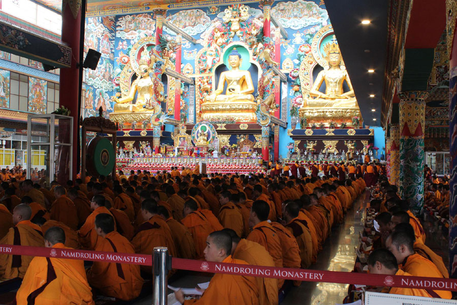

ལོ་ཐོ།
༄། །ལོ་གཅིག་གི་མཛད་རིམ་ཁག་གི་དུས་ཚིགས།།
མཐོ་སློབ་ཆེན་མོ་འདི་ཉིད་ཀྱི་ལོ་རེའི་འཛིན་གྲྭ་འཚོགས་པའི་དུས་ཚོད་བོད་ཟླ་ ༢ ཚེས་ ༣ ནས་ ཟླ་དགུ་ལྷག་གི་རིང་། གཙོ་བོ་མདོ་སྔགས་རིག་གཞུང་ལ་འཆད་རྩོད་རྩོམ་གསུམ་གྱི་སྐབས་འདུལ་བ་གཞི་གསུམ་གྱི་རིམ་པ་ཙམ་ལས། སྒྲུབ་འཕྲིན་གྱི་རིམ་པ་རྣམས་ནི་གྲྭ་ཚང་འདུས་མང་ནས་ལས་འགན་གཙོ་བོ་བཞེས་བཞིན་ཡོད། སྤྱིར་སྔ་འགྱུར་བའི་ཆོས་གྲྭ་ཆེན་པོ་གང་ཡིན་ཀྱང་ཐོས་པ་ཁོ་ན་ཙམ་ལ་བརྩོན་པ་མིན་པར་བཤད་སྒྲུབ་ཟུང་དུ་འཇུག་དགོས་སྟབས། འདི་གའི་དགེ་སློབ་རྣམས་ནས་ཀྱང་སྒྲུབ་ཕྲིན་གྱི་རིམ་པ་རྒྱལ་བ་གོང་མའི་ཕྱག་བཞེས་བཞིན་མཉམ་འཚོགས་གནང་བཞིན་པ་ཡིན།
༄། །ཚོམ་བུ་ཚོགས་སྒྲུབ།
ཐོག་མར་བོད་ཟླ་ ༡ ཚེས་ ༡ ནས་ ༣ བར་མཁན་སློབ་དགེ་བའི་བཤེས་གཉེན་དང་དགེ་འདུན་པ་རྣམས་ལོ་གསར་གྱི་སྟོན་མོ་ལ་རོལ། ཚེས་ ༨ ནས་སྒྲུབ་པའི་དངོས་གཞི་ལ། རིག་འཛིན་འདུས་པ། དཔལ་ཆེན་འདུས་པ། རཏ་གླིང་ཚེ་སྒྲུབ་གསང་བ་འདུས་པ། ཐུགས་སྒྲུབ་ཡང་སྙིང་འདུས་པ། ཐུགས་ཆེན་གསང་བ་འདུས་པ་རྣམས་ལོ་ལྟར་རེས་མོས་དང་། གཞན་ཡང་ཕུར་པ། ཚེ་ཆོག། ཞི་ཁྲོ་རྣམས་ཟུར་དུ་ཚོགས་ཏེ་ཚེས་ ༡༠ ཉིན་གུ་རུའི་གོས་སྐུ་ཆེན་མོའི་མཇལ་ཁ་དང་མཚན་བརྒྱད་ཀྱི་གར་འཆམ། ཚེས་ ༡༥ ཉིན་དངོས་གྲུབ་བླངས་རྗེས་ཚེ་ལྷ་རྣམ་གསུམ་གྱི་གོས་སྐུ་ཆེན་མོའི་མཇལ་ཁ་དང་གར་འཆམ་གཟིགས་འབུལ། དེ་རྗེས་སྒྲུབ་དབང་། མར་མེའི་སྨོན་ལམ། བཀྲ་ཤིས་བསྔོ་སྨོན་བཅས་དང། ཚེས་ ༡༦ ཉིན་རྡུལ་ཚོན་གྱི་དཀྱིལ་འཁོར་ཆུར་གཤེགས་ནས་མཐའ་གྲུབ་པའོ།།
༄། །གསར་ཞུགས།
ཕྱོགས་མཐའ་ཁག་ནས་ཕེབས་པ་རྣམས་གསར་ཞུགས་པའི་ཆ་རྐྱེན་ནི། འདིར་གཏན་འབེབས་ཟིན་པའི་གཞུང་ལུགས་རྣམས་ལ་སྦྱངས་པ་མཐར་ཕྱིན་གནང་འདོད་ཡོད་པ། རབ་བྱུང་གི་སྡོམ་པ་དང་ལྡན་པའམ་ངེས་པར་ཞུ་འདོད་ཡོད་པ། བཤད་གྲྭའི་སྒྲིག་གཞི་ངེས་པར་དུ་བརྩི་སྲུང་བྱེད་འདོད་ཡོད་པ། དེ་སྔོན་ཐུན་མོང་རིག་གནས་དང་ནང་ཆོས་སོགས་ལ་གཞི་རིམ་འཛིན་གྲྭ་བརྒྱད་པ་ཐོན་བའི་ཤེས་ལྡན་པ་སྟེ་རྐྱེན་བཞི་ལྡན་པའི་སྟེང་། བོད་ཡིག་སློབ་ཚན་དང་གཙོ་བོར་འབྲེལ་བའི་དེང་དུས་སློབ་གྲྭའི་འཛིན་རིམ་བརྒྱད་པའི་ལག་འཁྱེར་དང་། དགོན་སྡེ་གཞན་ཁག་ནས་ཕེབས་རིགས་རྣམས་ལ་ཁུངས་སོ་སོས་དགག་བྱ་མེད་པའི་རྒྱབ་གཉེར་གྱི་ཡིག་ཆ་ཡོད་པའམ། དེ་གཉིས་མེད་པའི་དོན་གཉེར་ཅན་གྱི་སློབ་ཕྲུག་ཤེས་ཚད་ལོན་ངེས་ཡོད་རིགས་སྐབས་ཐོབ་འབྲེལ་ཡོད་ནས་དགག་བྱ་མེད་པ་བཅས་འདི་གསུམ་གང་རུང་ལྡན་རིགས་རྣམས་ལ་གསར་ཞུགས་ཀྱི་བྲིས་རྒྱུགས་དང་ངག་རྒྱུགས་བླངས་ནས་འཕྲོད་པའམ། ཡང་ན་རྣམ་གླིང་སྔོན་འགྲོའི་འཛིན་གྲྭ་བརྒྱད་པ་མཐར་ཕྱིན་པའི་ཕྱག་ཁྱེར་དང་། དེ་ཐོག་འབུམ་ལྔ་བསག་སྦྱངས་ལེགས་པར་གྲུབ་ཟིན་པའི་ངོས་སྦྱོར་ཡོད་ན་ཞུགས་ཆོག་པ་ཡིན།། །།
གསར་ཞུགས་དང་དཔེ་ཁྲིད་དབུ་འཛུགས།
བོད་ཟླ་ ༢ ཚེས་ ༣ ཉིན་ལོ་སྔོན་མའི་རྒྱུགས་སྤྲོད་དོ་དམ་པས་གཙོ་འགན་བཞེས་ཐོག གསར་ཞུགས་རྣམས་ཀྱི་ངག་རྒྱུགས་དང་བྲིས་རྒྱུགས་རིམ་བཞིན་བླང། དེ་ཉིན་སློབ་གཉེར་བ་རྣམས་གུང་སེང་ནས་སླར་འཛོམས། ཚེས་ ༨ ཉིན་ཆེས་མཐོའི་རྒྱུན་ལས་དབུ་བཞུགས་ཐོག་མཁན་སློབ་རྣམས་ནས། ལོ་འཁོར་ཡིག་རྒྱུགས་ཆེན་མོའི་གྲུབ་འབྲས་ཨང་ཐོབ་ཤོག་ལྷེ་གནང་སྐབས་ཨང་དང་པོ་གཉིས་པ་རྣམས་དང། བློ་རྒྱུགས་ལྡེབ་གྲངས་བརྒྱ་ཡན་ཆད་འབུལ་མཁན་རྣམས་ལ་བྱ་དགའ་གསོལ་རས་གནང་། ཚེས་བཅུ་ ༡༠ ཉིན་རྒྱུན་ལས་ནས་གཏན་འབེབས་གནང་བ་ལྟར་མཁན་སློབ་སོ་སོས་ལོ་གསར་པའི་དཔེ་ཁྲིད་དངོས་གཞི་དབུ་འཛུགས་གནང་བ་བཅས་སོ།།
༄། །ལས་བྱེད་འཕོ་ལེན
བོད་ཟླ་ ༣ ཚེས་ ༣ ཉིན་རྒྱུན་ལས་དང་དགེ་སློབ་ཡོངས་རྫོགས་ལྷན་འཛོམས་ཐོག།འདས་ལོའི་ལས་བྱེད་རྣམས་ལ་གཟེངས་བསྟོད་གནང་མཐར། ལོ་གསར་པའི་རྒྱུན་ལས་སོགས་ལས་བྱེད་ཆེ་ཕྲ་ཀུན་བསྐོ་བཞག་གནང་བ་བཞིན་གསལ་བསྒྲགས་དང། དངུལ་གཉེར་ནས་ཟླ་དྲུག་ཕྱི་མའི་རྩིས་ཁྲ། མཁན་སློབ་རྣམས་ནས་འབྱུང་འགྱུར་ལོ་གཅིག་གི་སློབ་སྦྱོང་བྱེད་ཕྱོགས་གཙོས་ལེགས་སྤེལ་ཉེེས་འགོག་གི་བཀའ་སློབ། དགེ་སྐོས་ནས་མཐོ་སློབ་འདིའི་སྒྲིག་གཞི་རྩ་ཁྲིམས་གསལ་བསྒྲགས་གནང་བའོ།།
༄། །བཀའ་མའི་སྒྲུབ་མཆོད།
སྤྱི་ལོ་ ༡༩༧༡ ནས་ལོ་ལྟར་ བོད་ཟླ་ ༤ ཚེས་ ༥ ཉིན་ས་ཆོག་དང་རྩ་འཆམ། ཚེས་ ༧ ཉིན་ཐིག་ཆོག ཚེས་ ༨ ལ་དཀྱིལ་འཁོར་རྒྱན་བཀོད། ཚེས་ ༩ སྔ་དྲོ་ནས་དངོས་གཞི་མདོ་ཚོགས་ཆེན་འདུས་པ། སྒྱུ་འཕྲུལ་ཞི་བ། སྒྱུ་འཕྲུལ་ཁྲོ་བོ། སངས་རྒྱས་མཉམ་སྦྱོར། ཡང་དག་ཧེ་རུ་ཀ།རོང་ལུགས་ཕུར་པ། གཤིན་རྗེ་གདོང་དྲུག་བཅས་སྒྲུབ་ཁག་བདུན་སོ་སོར་ཚོགས་ཤིང། ཚེས་ ༡༣ ཉིན་གར་འཆམ། ༡༤ ཉིན་ཁྲོ་འཆམ་དང་རོལ་འཆམ། ༡༥ ཉིན་སྦྱིན་སྲེག་དང་སྒྲུབ་དབང་བཅས་ཀྱིས་མཐའ་གྲུབ།
༄། །ཀུན་མཁྱེན་མི་ཕམ་རྒྱ་མཚོའི་འདས་མཆོད།

སྤྱི་ལོ་ ༡༩༨༡ ནས་ལོ་ལྟར་བོད་ཟླ་ ༤ ཚེས་ ༢༩ ཉིན། མཐོ་སློབ་ཆེན་མོས་འགན་བཞེས་ཐོག་འདུས་སྡེ་ཡོངས་ནས་འཇམ་དཔལ་རྒྱུད་ལུགས་ཀྱི་དཀྱིལ་འཁོར་ཞལ་ཕྱེས་ཏེ་ཚོགས་མཆོད་རྒྱས་སྤྲོས་སྐབས། སྔ་དྲོ་ཆུ་ཚོད་ ༧ པར་དབུ་འཛུགས། ཐུན་སེང་གསོལ་ཇའི་སྐབས་རྣམས་སུ་འཛིན་རིམ་མཐོ་ཤོས་ནས་རིམ་བཞིན་ཆོས་བཤད། དགོང་མོ་ཆུ་ཚོད་ ༧ པ་ནས་ཐོག་མར་འཇམ་དཔལ་སྒྱུ་འཕྲུལ་དྲྭ་བའི་རྒྱུད་བཀླག་ཆོག་དང་འབྲེལ། ཆོས་ཀྱི་རྒྱལ་མཚན་ལེགས་པར་འཛུགས། ཞེས་པའི་མཚམས་སུ་སློབ་གཉེར་བ་རྣམས་ནས་ཆོས་བཤད་དང། ཚོགས་ལངས། དམ་བཅའ་སོགས་འཛིན་རིམ་བཞིན་གནང་མཐར་བཀྲ་ཤིས་ཚིག་བཟང་དང་འཕགས་པ་བཟང་པོ་སྤྱོད་པའི་སྨོན་ལམ་སོགས་ཀྱིས་མཐའ་བརྒྱན་ཏེ་གྲོལ་བའོ།
།དེའི་སྔོན་འགྲོ་རུ་ཀུན་མཁྱེན་མི་ཕམ་རྒྱ་མཚོའི་སྐུ་འདྲ་གདན་འདྲེན་ཞུས་ཏེ་རྣམ་གླིང་གསེར་གྱི་ལྷ་ཁང་ནང་བཞུགས་ཁྲིར་འཁོད་པ་དང་། དགེ་འདུན་པ་ཡོངས་ནས་ངེས་ཤེས་སྒྲོན་མེ་ཚོགས་འདོན་བྱེད་པའོ།།
༄། །ལོ་གཅིག་གི་མཛད་རིམ་ཁག་གི་དུས་ཚིགས།
༄། །སྒྲུབ་པའི་བསླབ་བྱ། དེ་ཡང་དམ་ཆོས་འདུལ་བ་རིན་པོ་ཆེའི་དགག་སྒྲུབ་ཀྱི་བསླབ་བྱ་རྣམས་ལས་བསྒྲུབ་པའི་བསླབ་བྱ་གཞི་བཅུ་བདུན་གྱི་ནང་ཚན། གསོ་སྦྱོང་དབྱར་གནས་དགག་དབྱེ་སྟེ་འདུལ་བ་གཞི་གསུམ་གྱི་ཕྱག་བཞེས་འདི་ནི་སངས་རྒྱས་ཀྱི་བསྟན་པའི་རྩ་བ་དང་མཐོ་སློབ་འདིའི་ལོ་གཅིག་གི་མཛད་སྒོ་གལ་ཆེས་ཤོས་ཡིན། དེར་བརྟེན་༸སྐྱབས་རྗེ་རིན་པོ་ཆེ་ནས་རྣམ་གླིང་དགོན་དུ་ལྷ་ཁང་མ་བཞེངས་པའི་སྔོན་ ༡༩༦༡ ལོ་ནས་འདུལ་བ་གཞི་གསུམ་གྱི་ཕྱག་སྲོལ་རྒྱུན་འཛུགས་གནང། དེ་ནི་འཕགས་ཡུལ་དུ་སྔ་འགྱུར་རྙིང་མའི་དགོན་སྡེ་ཁག་ལས་འདུལ་བ་གཞི་གསུམ་གྱི་རྒྱུན་འཛུགས་གནང་བ་སྔ་ཤོས་ཡིན།། ༄། །གསོ་སྦྱོང། སོ་སོར་ཐར་པའི་མདོ་ལས། དགེ་སློང་དག་གསོ་སྦྱོང་བྱའོ། །ཟླ་བ་ཕྱེད་ཕྱེད་ཀྱི་ཚེས་བཅོ་ལྔ་ལའོ། ཞེས་པ་ལྟར་ཟླ་བ་བྱུང་ངོ་ཅོག་གི་ཡར་ངོ་དང་མར་ངོའི་གསོ་སྦྱོང་ནམ་ཁེལ་གྱི་སྔ་དྲོ་ཆུ་ཚོད་ ༦ པའི་ཐོག་འཁར་རྔའི་བརྡས་བསྐུལ་རྗེས་དགེ་འདུན་པ་རྣམས་གཙུག་ལག་ཁང་མདུན་དུ་འཛོམས། བསླབ་པ་རྒན་རིམ་བཞིན་ཞལ་བཤལ་ཅིང་གནྜི་དྲིས་ནས་ནང་དུ་རྒན་རིམ་རྣམས་གཡས་གྲལ་དང། གཞོན་པ་རྣམས་གཡོན་དུ་འཁོད་དེ་ཕྱིར་བཅོས་གྲུབ་མཚམས་དགེ་ཚུལ་དང་མཉམ་འཚོགས་ཀྱིས་རྒྱུན་ཆགས་གསུམ་པ་སོགས་གློག མཁན་པོས་སོར་མདོ་གསུངས་རྗེས་གསོ་སྦྱོང་གི་ལས་བརྗོད་ཅིང་མཐའ་གྲུབ་པར་བྱས་ཏེ། ཚུལ་ཁྲིམས་རྣམ་དག་གི་གཟུངས་བཟླ་བཞིན་སྤོས་རོལ་བཅས་སེར་ཕྲེང་གིས་གཙུག་ལག་ཁང་ལ་སྐོར་བ་མཛད་རྗེས་སྒོ་ཁང་དུ་གྲལ་བསྒྲིགས་ཏེ་བསྔོ་སྨོན་བཅས་གྲོལ་བའོ།། ༄། །དབྱར་གནས། འདུལ་བ་མེ་ཏོག་ཕྲེང་རྒྱུད་ལས། གྲོ་བཞིན་ཟླ་བའི་ཚེས་གཅིག་ནས། སྔ་མའི་དབྱར་དེ་གཙོ་བོ་ཡིན། དེ་ཉིད་ཁྲུམས་ཀྱི་ཟླ་བ་ཡི། ཚེས་གཅིག་ནས་ནི་ཕྱི་མར་གྲགས། ཞེས་པ་ལྟར་དབྱར་སྔ་མ་ཡིན་ན་བོད་ཟླ་ ༦ ཚེས་ ༡༥ ནས་ཟླ་ ༧ ཚེས་ ༣༠ བར་དང། དབྱར་ཕྱི་མ་ཡིན་ན་ཟླ་ ༧ ཚེས་ ༡༥ ནས་ ༨ ཚེས་ ༣༠ བར་ལ་དགེ་ཚུལ་སློང་རྣམས་དམ་ཆོས་འདུལ་བ་དང། མཐུན་པར་དབྱར་གནས་བཞུགས། དེ་སྐབས་དགེ་འདུན་རྣམས་མཉམ་ཚོགས་ཀྱིས་ཉིན་ལྟར་སྔ་དྲོ་རྒྱུན་ཆགས་གསུམ་པ་དང། གུང་ཚིགས་སྐབས་དཀོན་མཆོག་རྗེས་དྲན་གྱི་མདོ་དང་ཡོན་བསྔོ། དགོང་དྲོ་ཆུ་ཚོད་ ༩ པར་གཞུང་ཆེན་རྣམས་ཀྱི་རྩ་བ་དང་བསྔོ་སྨོན་སོགས་གསུངས་སྲོལ་དང། འདི་སྐབས་མཁན་སློབ་ཡོངས་ནས་སློབ་སྟོན་ཟབ་ནན་གནང་བ་བཞིན་སློབ་ཕྲུག་རྣམས་ནས་ཀྱང་ཧུར་བརྩོན་ལྷག་པར་བསྐྱེད་དེ་ཆོས་སྤྱོད་བཅུའི་བྱ་བ་བརྩོན་ཅིང། བགྲོ་གླེང་། ཆོས་བཤད། རྩོད་པ་བཅས་ཀྱིས་སློབ་སྦྱོང་ཡར་རྒྱས་གཏོང་བའོ།། ༄། །དགག་དབྱེ། དགག་དབྱེའི་རིང་སྦྱོར་ལ་ཞག་བདུན་གྱི་སྔ་རོལ་ནས་སྤྱོད་ཡུལ་གྱི་གྲོང་ལ་གོ་བར་བྱས་ཏེ། དབྱར་སྔ་མ་ཡིན་ན་ཟླ་ ༧ ཚེས་ ༢༨ དགོང་དྲོ་དང་། ཕྱི་མ་ཡིན་ན་ཟླ་ ༨ ཚེས་ ༢༨ ཉིན་དབྱར་གནས་མཁན་པོས་ཚོགས་མང་ལ་ཆོས་བཤད་དང། སློབ་གཉེར་བ་རྣམས་ནས་ཆོས་བཤད། རྩོད་པ། ཚོགས་ལངས་བཅས་མཚན་གུང་བར་གནང། དགག་དབྱེ་ཉེ་སྦྱོར་ལ་ཚེས་ ༢༩ ནངས་པར་ཤིན་ཏུ་སྔ་བོར་དབྱར་བཞུགས་དགེ་འདུན་རྣམས་ཀྱིས་ཕན་ཚུན་བཟོད་གསོལ་སོགས་གྲུབ་མཐར་རྩ་དུརྦ་བཟུང་སྟེ་དགག་དབྱེ་གནང་ཞིང་དེ་རྗེས་དབྱར་གྱི་རྙེད་པ་བགོད། ཚེས་ ༣༠ ཉིན་གནས་ལ་ཆགས་པ་སྤངས་པའི་ཕྱིར་མཚམས་བུ་ཆུང་ལས་རྒྱང་གྲགས་གཅིག་གི་ཕྱི་རོལ་དུ་ལྗོངས་རྒྱུར་ཕེབས་ཏེ་རྩོད་པའི་རིམ་པ་སོགས་ཀྱིས་མཐའ་གྲུབ་པ་དང་། དེ་རྗེས་ཉིན་གསུམ་རིང་གུང་སེང་གནང་སྲོལ་ཡོད།
༄། །ཀུན་སྤྱོད་དང་འབྲེལ་བའི་ཉིན་རེའི་བཅའ་ཁྲིམས།
སྔར་ནས་རྒྱལ་བ་དཔལ་ཡུལ་བའི་གདན་སར་རབ་བྱུང་གི་སྡེ་འབའ་ཞིག་གིས་བསྐྱངས་པས། འདུས་སྡེ་རྣམས་ཀྱིས་རྒྱུན་དུ་འདུལ་བའི་ཕྱག་བཞེས་དང་མཐུན་པའི་ཆས་གོས་ཚུལ་ལྡན་མནབ་དགོས་པ་དང་། རབ་བྱུང་གི་བསླབ་ཚིགས་དང་འགལ་བའི་གླུ་གར་སོགས་འཕྱོར་སྒེག་དང་རྒོད་བག་རིགས་གཏན་ནས་མི་ཆོག ཆོས་ཁྲིད་དང་རང་སྦྱོང་སོགས་ཀྱི་སྐབས་དགོན་པ་ལས་ཕྱི་རོལ་དུ་འགྲོ་དགོས་ཚེ་དགོངས་ཁྲོལ་ཚད་ལྡན་ཐོབ་དགོས། བསླབ་པ་རྒན་རིམ་དང་དགེ་སློབ་ལས་བྱེད་སོགས་ལ་ཡ་རབས་སྤྱོད་ཚུལ་དང་མཐུན་པར་གུས་བཀུར་དང་། སྒྲིག་འགལ་རིགས་བྱུང་ཚེ་སྒྲིག་གཞི་ཟུར་གསལ་ལྟར་བཤགས་སྡོམ་དགོས། དེ་ལ་རེས་གཟའ་ཟླ་བ་ནས་པ་སངས་བར་ཞོགས་པ་ཆུ་ཚོད་ ༥ པར་བཞེངས་ནས་ ༧ བར་གཞུང་རྩ་བ་སོགས་བློ་འཛིན་དང་འབྲེལ་རང་སྦྱོང་གནང་། ༨ཿ༣༠ བར་གསོལ་ཇ་དང་འབྲེལ་གཙང་སྦྲ། ༨ཿ༣༠ ནས་ ༡༡ཿ༣༠ བར་ཆོས་ཐུན་སྔ་མ། ཉིན་གུང་ཆུ་ཚོད་ ༡༡ ནས ༡ པོའི་བར་གསོལ་ཚིགས་དང་འབྲེལ་བར་སེང་། ཆུ་ཚོད་ ༡ ནས ༣ བར་སྐྱོར་སྦྱོང་། ཆུ་ཚོད་ ༣ ནས་ ༣ཿ༣༠ བར་ཕྱི་དྲོའི་གསོལ་ཇ་དང་འབྲེལ་བར་སེང་། ༣ཿ༣༠ ནས་ ༤ཿ༣༠ བར་ཆོས་ཐུན་ཕྱི་མ། ༤ཿ༣༠ ནས་ ༥ པར་བར་སེང་། ༥ ནས་ ༦ པར་ལོ་དེའི་གཏན་འབེབས་ལྟར་རེས་མོས་ཀྱིས་སློབ་ཕྲུག་གཉིས་རེ་དང་། འཛིན་གྲྭ་ལྷན་འཛོམས་ཐོག་རྩོད་གྲྭ་ཚུགས། ༦ ནས་ ༧ཿ༣༠ བར་གསོལ་ཚིགས་དང་འབྲེལ་བར་སེང་། ༧ཿ༣༠ ནས་ ༩ཿ༣༠ བར་རང་ཤག་ཏུ་རང་སྦྱོང་། ༩ཿ༣༠ ནས་ ༡༠ཿ༣༠ བར་གསོལ་ཇ་དང་འབྲེལ་བར་སེང་། ༡༠ཿ༣༠ ནས་ ༡༡ བར་རང་སྦྱོང་དང་གཟིམས་བརྡ་གཏོང་སྐབས་གློག་བསད་དེ་གཟིམས་རྒྱུ་བཅས་དང་། རེས་གཟའ་སྤེན་པའི་ཉིན་སྔ་དྲོ་ཆུ་ཚོད་ ༥ ནས་ ༨ཿ༣༠ གོང་གསལ་ལྟར་དང་ ༨ཿ༣༠ ནས་ ༡༠ཿ༣༠ བར་འཛིན་གྲྭ་སོ་སོའི་དགེ་རྒན་ནས་རྩོད་རྒྱུགས་དང་སྐབས་འགར་བཤད་རྒྱུགས་བཞེས་རྗེས་གུང་སེང་། དགོང་མོ་ཆུ་ཚོད་ ༡༡ ཐོག་གཟིམས་རྒྱུ་དང་། རེས་གཟའ་ཉི་མའི་ཉིན་གུང་སེང་། དགོང་མོ་ཆུ་ཚོད་ ༧ཿ༣༠ ནས་ ༩ཿ༣༠ བར་དམ་བཅའ་ཚོགས་པ་དང་། ལོ་འཁོར་རྒྱུགས་སྤྲོད་ཆེན་མོའི་རང་སྦྱོང་སྐབས་དཔེ་ཁྲིད་གྲུབ་ཟིན་པས་དུས་ཚོད་གཞན་རྣམས་སྔར་ལྟར་ལ་སྔ་དྲོ་ཆུ་ཚོད ༡༠ཿ༣༠ ནས་ ༡ བར་གུང་སེང་། ཕྱི་དྲོ་ ༣ཿ༣༠ ནས་ ༥ཿ༣༠ བར་རང་སྦྱོང་། དེ་ནས་ ༧ཿ༣༠ བར་གུང་སེང་ཡོད། དུས་ཚོད་དེ་དག་གི་སྐབས་ཏིང་ཏིང་གི་བརྡ་གཏོང་བའོ།།
༄། །དཔེ་ཁྲིད།
དེ་ཡང་དཔེ་ཁྲིད་དངོས་གཞི་དབུ་མ་ཚུགས་པའི་སྔོན་ཙམ་ན་དཔེ་མཛོད་ལས་བྱེད་རྣམས་ཀྱིས་དུས་ཚོད་གསལ་བསྒྲགས་ལྟར་འཛིན་གྲྭ་སོ་སོའི་སློབ་ཚན་གྱི་དཔེ་རྣམས་དཔེ་མཛོད་ཁང་ནས་གཡར། བོད་ཟླ་ ༢ ཚེས་ ༡༠ ཉིན་ཐོག་མར་བཀྲ་ཤིས་བརྒྱད་པ་སོགས་གསུངས་ཏེ་དཔེ་ཁྲིད་དབུ་འཛུགས། དེ་རྗེས་ཉིན་ལྟར་མཁན་སློབ་རྣམས་ཀྱིས་སྔ་དྲོ་ཆུ་ཚོད་ ༨ཿ༣༠ ནས་ ༡༡ བར་རྩ་བའི་སློབ་ཚན་ཁག་དཔེ་ཁྲིད་དང་། སྐྱོར་དཔོན་རྣམ་པས་ཉིན་གུང་ཆུ་ཚོད་ ༡ ནས་ ༣ བར་དེ་ཉིད་བསྐྱར་ཁྲིད་གནང་། ཡན་ལག་སློབ་ཚན་ཁག་ཕྱི་དྲོ་ཆུ་ཚོད་ ༣ཿ༣༠ ནས་ ༤ཿ༣༠ བར་མཁན་སློབ་སྐྱོར་དཔོན་གང་རུང་གིས་ཁྲིད། དཔེ་ཁྲིད་མ་གྲུབ་པའི་དཀའ་ངལ་ཡོད་ན་དགོང་མོ་ཆུ་ཚོད་ ༧ཿ༣༠ ནས་ ༩ཿ༣༠ བར་ཁྲིད་གནང་། སྐབས་དེ་རྣམས་སུ་དགེ་རྒན་རྣམས་ལ་དོགས་འདྲི་དང་། དགེ་སློབ་ཕན་ཚུན་རྩོད་པ་དང་རྩོད་ལན། དེ་བཞིན་སློབ་ཕྲུག་ནང་ཕན་ཚུན་དཀའ་གནད་སྐོར་བགྲོ་གླེང་དང་རྩོད་པ་སོགས་བྱེད་བཞིན་ཡོད། ལྷག་པར་ ༢༠༠༢ ནས་གཟུང་འཛིན་གྲྭ་ཕལ་ཆེ་བར་རྩ་བའི་སློབ་ཚན་གང་ཞིག་འཁྲིད་བཞིན་པ་དེའི་དཀའ་གནད་ཁག་སློབ་ཕྲུག་སོ་སོར་བགོས་ཏེ། རང་ཉིད་ལ་ཐོབ་པའི་བརྗོད་བྱ་དེར་དམ་བཅའི་རྩོམ་ཡིག་བྲིས་ནས་རེས་མོས་ཀྱིས་དཔེ་ཁྲིད་སྐབས་སམ། དུས་ཚོད་ལོགས་སུ་གཏན་འབེབས་ལྟར་ལོ་རིམ་དེའི་སློབ་ཕྲུག་ཡོངས་རྫོགས་འདུས་པའི་དབུས་སུ་དམ་བཅར་བཞུགས། གཞན་རྣམས་ཀྱིས་དོགས་འདྲིའི་སྐབས་ལུང་རིགས་དང་མཐུན་པའི་ལན་འདེབས་གང་ཐུབ་མཛད་མཐར། དཔེ་ཁྲིད་རྒན་གྱིས་དེའི་སྐོར་གསལ་བཤད་གནང་སྲོལ་དང་། ཉིན་ལྟར་དཔེ་ཁྲིད་ཀྱི་དབུར་ཀུན་སློང་བཅོས་ཤིང་སེམས་བསྐྱེད་ཀྱིས་ཟིན་པར་བྱས་ཏེ་འཇམ་བསྟོད་སོགས་གསོལ་འདེབས་དང་མཐར་བསྔོ་བ། སྐྱེས་ཆེན་ཁག་གི་ཞབས་བརྟན་དང་འབྲེལ་བཀྲ་ཤིས་སྨོན་ཚིག་སོགས་ཀྱིས་མཐའ་བརྒྱན་ཏེ་མཇུག་སྒྲིལ་བ་སྤྱིར་བཏང་དང་། ཁྱད་པར་འཛིན་གྲྭ་སོ་སོའི་ལོ་གཅིག་གི་དཔེ་ཁྲིད་རྫོགས་མཚམས་འཛིན་གྲྭ་ཁ་ཤས་ནས་སྟོན་འཁོར་ཚོམ་བུ་གཅིག་ཏུ་སངས་རྒྱས་པ་དང་ཚོགས་བསགས་སྒྲིབ་སྦྱོང་སོགས་ལ་དམིགས་ནས་ཚོགས་ཀྱི་དགའ་སྟོན་དང་། འཛིན་གྲྭ་ཁ་ཤས་ཀྱིས་བསྟན་འཛིན་གྱི་སྐྱེས་བུ་རྣམས་སྐུ་ཚེ་ཞབས་པད་བརྟན་ཕྱིར་མདོ་སྔགས་གང་རུང་གི་ཆོ་གའམ། ཤེར་ཕྱིན་འབུམ་པ་དང་གཤེགས་སྙིང་བསྟན་པའི་མདོ་བཅུ་སོགས་ཀློག་པ་ཡིན།
༄། །འཆད་རྩོད་རྩོམ་གསུམ་གྱི་འཕེལ་རིམ།
དེ་ཡང་འཇམ་མགོན་མི་ཕམ་རིན་པོ་ཆེའི་ཞལ་སྔ་ནས་འཆད་རྩོད་རྩོམ་ལ་ཐོགས་པ་མེད་པས་རྒྱལ་བའི་བསྟན་པ་གསལ་བར་བྱེད་ཅིང། དེ་ལ་བརྟེན་ནས་འགྲོ་བ་ཐམས་ཅད་ཀྱི་ཕན་བདེའི་དོན་ཆེན་པོ་འགྲུབ་པའི་ཡོན་ཏན་གྱི་བསྔགས་པ་ཚད་མེད་པའི་དཔལ་ལ་དབང་འབྱོར་བར་འགྱུར་རོ། །ཞེས་གསུངས་པ་བཞིན་མཉམ་མེད་བུ་རམ་ཤིང་པའི་བསྟན་པ་འདི་ཉིད་ཕྱི་འཆད་རྩོད་རྩོམ་གསུམ་དང་ནང་ཐོས་བསམ་སྒོམ་གསུམ་གྱི་སྒོ་ནས་འཛིན་དགོས་ཤིང། མཐོ་སློབ་ཆེན་མོའི་དམིགས་ཡུལ་གྱི་གཙོ་བོ་ཞིག་ཀྱང་ཡིན་སྟབས་མཁན་སློབ་སློབ་གཉེེར་བ་དང་བཅས་པས་དེ་ལ་ནན་ཏན་མཛད་པ་ལས་འཆད་རྩོད་རྩོམ་པའི་འཕེལ་རིམ་རྒྱ་ཆེར་བྱུང་བ་ཡིན།
༄། །འཆད་པ།
སློབ་ཚན་དུ་གཏན་འབེབས་ཟིན་པའི་མདོ་སྔགས་ཀྱི་གཞུང་ལུགས་ཁག་མཁན་སློབ་རྣམས་ཀྱི་ཉིན་ལྟར་བཀའ་ཁྲིད་བསྐྱངས་པའི་ཐོག།སྐབས་རེར་ཕྱི་ཕྱོགས་ཀྱི་མཁས་དབང་རྣམས་གདན་ཞུས་ཀྱིས་འཆད་ཉན། ཡང་འདི་གའི་མཁན་ཆེན་རྣམས་ནས་སློབ་ཚན་དུ་མེད་པའི་གཞུང་ལུགས་ཁག་ཟུར་བཤད་གནང་བ་དང་། དེ་བཞིན་སྐྱོར་དཔོན་རྣམས་ཀྱིས་འཛིན་གྲྭར་སློབ་ཚན་ཁག་སྐྱོར་སྦྱོང། གཞན་ཡང་དོན་གཉེར་ཅན་གྱི་གང་ཟག་སྒེར་གྱིས་བསྐུལ་བ་ལས་ཤེས་ཚད་ལྡན་པའི་སློབ་གཉེར་བ་རྣམས་ནས་དཔེ་ཚན་འགའ་ཟུར་ཁྲིད། ཀུན་མཁྱེན་ཆེན་པོ་དང་མི་ཕམ་ཆོས་རྗེའི་འདས་མཆོད་དང་། དེ་བཞིན་ཆོས་སྡེ་འདིའི་མཛད་སྒོ་གལ་ཆེན་ཁག་རྣམས་སུ་མདོ་སྔགས་གཉིས་ཀྱི་དཀའ་བའི་གནད་ལས་འཕྲོས་པའི་འབེལ་གཏམ་ཚོགས་བཤད། ལྷག་དོན་ ༡༩༨༦ ལོར་སེ་ར་ཐེག་ཆེན་གླིང་གི་གཙུག་ལག་ཁང་དུ་༸གོང་ས་མཆོག་གིས་དབུས་འདུས་པ་སྟོང་ཕྲག་དུ་མའི་དབུས་སུ། སློབ་གཉེར་བ་རྣམས་ནས་ལེགས་བཤད་ཀྱི་མཆོད་སྤྲིན་རྒྱ་ཆེར་སྤྲོས་པས། ༸མགོན་པོ་མཆོག་གིས་ལེགས་སོའི་དབུགས་དབྱུང་བསྩལ་བ་སོགས་ནི་འཆད་པའི་འཕེལ་རིམ་མཚོན་བྱེད་ཅིག་ཡིན་ལ། མདོར་ན་བཤད་གྲྭ་ཆེན་པོ་འདིའི་དགེ་སློབ་ཡོངས་ནས་མདོ་སྔགས་ཐེག་དགུའི་ཆོས་རྔ་ཆེན་པོའི་སྒྲ་རྟག་ཏུ་བསྒྲགས་པས་འཆད་པའི་རིམ་པ་ཡར་ངོའི་ཟླ་ལྟར་འཕེལ་བཞིན་པ་ལགས།
༄། །རྩོད་པ།
མཐོ་སློབ་ཆེན་མོ་འདི་ཉིད་དབུ་བརྙེས་ནས་བཟུང་ཉིན་ལྟར་རྩོད་གྲྭའི་དུས་ཚོད་ལོགས་སུ་གཏན་འབེབས་བཞིན་སློབ་གཉེར་བ་ཡོངས་ཀྱིས་བརྩོན་པ་ཆེན་པོས་དོན་དུ་གཉེར་བས། རྩོད་པའི་སྐབས་ལུས་ཀྱི་རྣམ་འགྱུར་དང་བ་འདྲེན་པ་དང་། ངག་གི་རྗོད་པ་སྒྲོས་གཙང་བ། བློའི་གོ་སྟོབས་ཆེ་བས་གཞུང་ལུགས་རབ་འབྱམས་ཀྱི་དཀའ་གནད་ལ་དགག་བཞག་སྤོང་གསུམ་གྱི་ཚུལ་ཕས་རྒོལ་གྱི་རི་བོ་རྡུལ་དུ་བརྙིལ་ཞིང། གཞན་དྲིང་ལ་ལྟོས་མི་དགོས་པར་རང་རྐང་ཚུགས་པ་ཡོད། དེས་ན་ ༡༩༨༣ ལོར་གོང་ས་ཆེན་པོ་མཆོག་གི་མདུན་རྩོད་རྒྱུགས་ཐེངས་དང་པོར་ཕུལ། ༡༩༩༤ ལོར་རྒྱུགས་འབུལ་གཉིས་པ། དེ་བཞིན་ ༡༩༩༩ ལོར་གཙུག་ལག་ཁང་ཆེན་པའི་སྒོ་འབྱེད་མཛད་སྒོའི་དུས་བཟང་དང་བསྟུན་རྩོད་རྒྱུགས་ཐེངས་གསུམ་པ་ཕུལ། སྐབས་དེ་རྣམས་སུ་༸མགོན་པོ་གང་ནས་རྩོད་པའི་ཚུལ་ལ་ཐུགས་དགྱེས་པ་ཆེན་པོས་བསྔགས་བརྗོད་མཛད།
༄། །རྩོམ་པ།
སྤྱིར་མཐོ་སློབ་ཆེན་མོའི་རྩ་ཁྲིམས་གཞིར་བཟུང་ལོ་འཁོར་ཡིག་རྒྱུགས་ཆེན་མོ་དང་། མདོ་འོག་མའི་ལོ་རིམ་དང་པོ་དང་གཉིས་པ་གཉིས་ཀྱི་ཟླ་རྒྱུགས། དེ་བཞིན་དབྱར་གནས་སྐབས་སློབ་གཉེར་བ་ཁག་གི་བགྲོ་གླེང་དམ་བཅའི་རྩོམ་ཡིག་སོགས་དང་། གཞན་ཡང་མཁན་སློབ་སློབ་གཉེར་བ་རྣམས་ནས་གཞུང་ལུགས་ཆ་ཚང་བའི་འགྲེལ་བཤད། གཞུང་ཆེན་མོའི་དཀའ་བའི་གནད་ཟུར་ཕྱུང་གི་སྒོ་ནས་འགྲེལ་བཤད། རྟགས་རིགས་དང་བློ་རིགས་ཀྱི་རྣམ་གཞག་ཆེ་ཆུང་སྣ་ཚོགས། སུམ་རྟགས་ཀྱི་རྣམ་བཤད་ཁག་བསྟན་འཛིན་གྱི་སྐྱེས་ཆེན་སོགས་ཡུལ་གོང་མ་རྣམས་ལ་སྙན་ཚིག་གི་ལམ་ནས་དྲངས་པའི་ཆེད་བརྗོད་སྣ་ཚོགས། ལྷག་པར་རིག་མཛོད་རྩོམ་སྒྲིག་ཁང་དབུ་བརྙེས་པ་ནས་བཟུང་འདུལ་བའི་དགག་སྒྲུབ་ཀྱི་བསླབ་བྱ་སོགས་དཔེ་དེབ་སྣ་ཚོགས་རྩོམ་སྒྲིག་ཞུས་ཤིང་། དེ་དག་གིས་མཚོན་ཐུན་མོང་བརྡ་དག་དང་སྙན་ངག་ནས་བཟུང་ཐུན་མིན་མདོ་སྔགས་ཡོངས་སུ་རྫོགས་པའི་དགོངས་དོན་རྣམས་རང་རང་གི་བློ་གྲོས་ཀྱི་རྩལ་ལ་དཔག་པའི་འགྲེལ་བཤད་དང་། སྡོམ་ཚིག་སོགས་སྣ་ཚོགས་བརྩམས་ཡོད་པ་དེ་དག་ལས་པར་བསྐྲུན་བགྱིས་པ་ཡང་མང། འགའ་ཞིག་ལ་ཤེས་བྱའི་གནས་ལ་ལེགས་པར་བལྟ་བའི་བློ་གྲོས་དང་ལྡན་པའི་རིས་མེད་མཁས་དབང་རྣམས་ཀྱིས་བསྔགས་བརྗོད་དང་འབྲེལ་ཕྲིན་ལས་ཀྱང་རྒྱ་ཆེར་འཕེལ་བཞིན་པའོ།། །།
༄། །མ་འོངས་པའི་མདུན་ལམ།
འབྱུང་འགྱུར་གྱི་མདུན་ལམ་ནི། སྔ་འགྱུར་མཐོ་སློབ་མདོ་སྔགས་རིག་པའི་འབྱུང་གནས་གླིང་འདི་ཉིད་ལ་བརྟེན། བསྟན་འཛིན་གྱི་སྐྱེས་ཆེན་དམ་པ་མང་དུ་བསྐྲུན་ཏེ་ཕན་བདེ་མ་ལུས་པའི་འབྱུང་གནས་གཅིག་པུར་གྱུར་པ་མཉམ་མེད་བུ་རམ་ཤིང་པའི་བསྟན་པ་རིན་པོ་ཆེ་སྤྱི་དང་། ཁྱད་པར་བོད་གངས་ཅན་གྱི་ལྗོངས་སུ་རྒྱལ་བསྟན་རིན་པོ་ཆེ་དར་བའི་ཕྱི་མོ། ཆེ་བ་དྲུག་ལྡན་གསང་ཆེན་སྔ་འགྱུར་རྙིང་མ་པ་ཞེས་ཡོངས་སུ་གྲགས་པའི་རིང་ལུགས་འདི་ཉིད་དར་ཞིང་རྒྱས་པའི་སྒོ་ནས་ཡུན་དུ་གནས་ཏེ། འཇིག་རྟེན་གྱི་ཁམས་འདིར་གནས་སྐབས་བདེ་སྐྱིད་བསྐྲུན་རྒྱུ་དང་། མཐར་ཐུག་སེམས་ཅན་ཐམས་ཅད་འཚེ་མེད་ཞི་བ་དམ་པའི་གོ་འཕང་ལ་དབུགས་དབྱུང་བའོ།། །།